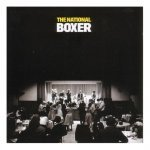

Music Reviews
-
Muleskinner Jones Alcohol Tobacco Raygun?
David Coleman swallows his pride and admits he made a mistake. Muleskinner Jones is not the worst singer ever. He's actually rather talented.
Read more... -
Electrelane No Shouts, No Calls
Brighton's Electrelane deliver their finest album yet.
Gabbie Nirenburg reviews... -
Efterklang Under Giant Trees
A limited edition mini-album - 30 minutes and five tracks - to keep us going until the promised follow-up to their phenomenally successful debut, Tripper, due in the autumn.
Paul Roylance reviews. -
Adam Franklin Bolts of Melody
The songwriting force behind the cruelly underrated Swervedriver returns to the guitar driven sound of his heyday with the first release under his given name.
David Coleman gets all nostalgic... -

Wilco Sky Blue Sky
Tweedy and Co. get down to basics.
Alan Shulman reviews... -
Kieran Hebden & Steve Reid Tongues
Kieran Hebden continues his work away from Four Tet with a more focussed, sharper approach than his Exchange Sessions.
-

The National Boxer
Unlocking Boxer takes some patience. This year's Grower of the Year is also the Album of the Year.
-
Frog Eyes Tears of the Valedictorian
Wherein Carey Mercer goes off his meds.
Alan Shulman surveys the results... -
Mavis Staples We'll Never Turn Back
Legendary gospel singer Mavis Staples teams up with Ry Cooder for this album of rootsy protest songs.
Craig Thompson reviews... -

Dinosaur Jr. Beyond
Dinosaur Jr. makes its triumphant return to the recording studio - with wonderful results.